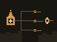

Dependency-free catalog projection / v0.2.0
Trusted context, placed with evidence.
Terran projects one reviewed local catalog into fixed AI coding harness destinations. It plans before changing, refuses unsafe collisions and drift, and records what it owns.

Operating model
Inspect the source. Review the plan. Keep the receipt.
The default catalog manages 12 skill projections, 2 complete instruction copies, and 1 OpenCode config. Skill links stay live to the enrolled checkout; copied files change only through terran apply. Target IDs resolve to fixed destinations in Terran, never catalog-selected paths.
Terran does: validate ownership, modes, links, boundaries, hashes, fixed targets, receipts, and backups needed by the planned action. doctor validates every adoption backup.
Terran does not: clone or fetch catalogs, install Naru, codebase-memory, packages, plugins, or services, manage secrets, or sandbox a malicious process running as the same user.
- TrustChoose and inspect one local catalog repository.
- PlanValidate state and review every source, destination, action, and reason.
- ApplyLock, preflight, revalidate, and perform only eligible reviewed work.
- VerifyWrite the private receipt, then check status and doctor.
Collision decisions
Terran never clears unrelated content to make a plan clean.
| Observed destination | Result | Decision |
|---|---|---|
| Missing | Create | Review, then apply. |
| Safe regular file with exact source bytes | Adopt | Keep the active file and store a validated private backup. |
| Safe, differing unowned instruction or config | Blocked collision | Interactive apply can replace with backup, keep it unowned, or quit. |
| Skill collision or unsafe type, link, owner, mode, or parent | Blocked collision | Stop and investigate outside Terran. |
| Receipt-owned content or backup changed | Blocked drift | Stop. Terran will not overwrite it. |
Install and start
Use an exact 0.2.0 release or a reviewed source revision.
Terran supports Darwin and Linux—including Omarchy—on amd64 and arm64. Download the exact release assets, inspect install.sh, and verify the published checksum before installing. A source build requires Go 1.24 or newer.
less install.sh
sh install.sh v0.2.0
terranRunning bare terran in a human terminal guides enrollment, review, apply, and verification. Advanced commands remain available through terran help.
Reference
Read the boundary before relying on it.
Naru remains separately installed and upgraded. Terran preserves its configured selection but does not invent or enforce a Naru version.